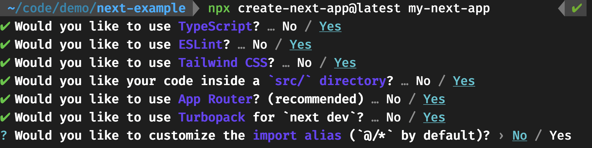

Weekly overview
Week 1
Introduction and project overview.
- Make sure to read the syllabus and project description.
Week 2
Business frameworks
- Business model canvas
- User persona
- Value proposition canvas
- Jobs to be Done
Python Setup with uv
Welcome to this guide on setting up your Python development environment using the powerful package manager called uv.
A properly configured development environment is crucial for efficient coding. It helps manage dependencies, keeps your projects organized, and provides powerful tools that make coding easier and more enjoyable. The uv package manager we’ll be using is a modern, fast alternative to traditional Python package managers.
Step 1: Apply for GitHub Student Developer Pack 🎓
The GitHub Student Developer Pack provides students with free access to the best developer tools.
- Visit GitHub Student Developer Pack
- Click on “Get your pack”
- Sign in with your GitHub account (or create one if you don’t have it)
- Verify your student status using your school-issued email
- Complete the application form
- Wait for approval (usually takes 1-7 days)
Why this matters: The pack includes free access to GitHub Copilot, which is an AI pair programmer that will help you write better code faster.
Step 2: Install Visual Studio Code 💻
VS Code is a lightweight but powerful source code editor.
During installation on Windows, check the options “Add ‘Open with Code’ action to Windows Explorer file context menu” and “Add ‘Open with Code’ action to Windows Explorer directory context menu” for easier access.
- Go to VS Code download page
- Download the appropriate version for your operating system
- Run the installer and follow the on-screen instructions
- Launch VS Code after installation
To be able to open VS Code from the command line interface using code . command:
- Open VS Code
- Press
Cmd+Shift+Pto open the Command Palette - Type “shell command” and select “Shell Command: Install ‘code’ command in PATH”
- Restart your terminal for changes to take effect
Step 3: Install Essential VS Code Extensions 🧩
Extensions enhance VS Code with additional features. We’ll install three key extensions.
In VS Code, click on the Extensions icon in the sidebar (or press: Windows Ctrl+Shift+X / mac: Cmd+Shift+X).
Python Extension
- Search for “Python”
- Find the extension by Microsoft (usually the first result)
- Click “Install”
GitHub Copilot
- Search for “GitHub Copilot” in the Extensions marketplace
- Click “Install”
- After installation, sign in with your GitHub account using the account icon in the lower left sidebar
- You’ll be prompted to authorize VS Code to use GitHub Copilot
GitHub Copilot Chat
- Search for “GitHub Copilot Chat” in the Extensions marketplace
- Click “Install”
- This extension works alongside GitHub Copilot to provide conversational AI assistance
You can enhance Copilot’s chat responses by providing it with contextual details about your workflow, tools, or project specifics. Instead of manually including this context in every chat query, you can create a custom instructions file that automatically incorporates this information with every chat request.
Step 4: Install uv Package Manager ⚡
uv is a fast, modern Python package manager and resolver.
For Windows (PowerShell):
- Open PowerShell
- Run the following command:
powershell -ExecutionPolicy ByPass -c "irm https://astral.sh/uv/install.ps1 | iex"- Restart your PowerShell session to ensure
uvis in your PATH
For macOS/Linux (Terminal):
- Open Terminal
- Run the following command:
curl -LsSf https://astral.sh/uv/install.sh | shIf your system doesn’t have curl, you can use wget:
wget -qO- https://astral.sh/uv/install.sh | sh- Close and reopen your terminal to ensure
uvis in your PATH
Verify installation: Type uv --version in your command line interface. You should see the version number of uv displayed.
Step 5: Initialize Your First Project
Now let’s create a new Python project structure using uv:
- Open your command line interface (PowerShell on Windows or Terminal on Mac/Linux)
- Simply type the following command directly in your command line or first navigate to the directory where you want to create your project (e.g.,
cd Documents) - Run the following command to initialize a new project named “genai-app” with Python 3.11:
uv init genai-app --python 3.11- Creates a new directory called
genai-app - Sets up a project structure with Python 3.11
- Creates initial configuration files
Step 7: Activate your Virtual Python Environment 🔄
A virtual environment is an isolated space where you can install packages without affecting your global Python installation. We can create and activate this environment with:
uv sync- Creates a virtual environment for your project
- Sets up the environment based on your project’s specifications
- This environment is isolated from your system Python installation
Let’s execute the example Python file main.py to make sure everything is working:
python main.pyYou should see a “Hello, world” message.
If you get an error, try using python3 instead of python:
python3 main.pyStep 8: Install Required Packages 📦
Let’s add some commonly used packages for AI and data science projects:
uv add pandas python-dotenv openai gradio streamlitpandas: A beginner-friendly library that helps you work with data tables (like Excel spreadsheets)python-dotenv: Helps keep your passwords and API keys safe by storing them in a separate fileopenai: Connects your code to AI services like ChatGPTgradio: Creates simple web interfaces for your AI projects with minimal codingstreamlit: Turns your Python scripts into interactive web apps with just a few lines of code
Step 9: Open your project in VS Code
Now let’s open your new project in VS Code where we’ll write our code:
- Open VS Code
- Click on “File” in the top menu on the left
- Select “Open Folder…”
- Find and select your
genai-appfolder
When you’re in your command line, this command opens VS Code in your current directory (the . represents “current location”).
code .Step 10: Run Your First Python Program 🏃♀️
Let’s make sure everything is working by running the example file:
python3 main.pyYou should see a “Hello, world!” message appear. This confirms that: 1. Your Python is working correctly 2. Your virtual environment is active 3. You’re ready to start coding!
Troubleshooting Common Issues 🔧
Package Installation Problems
If you see errors when adding packages:
- Check that you’re connected to the internet
- Try running
uv syncagain to refresh your environment - Read the error message carefully - it often tells you exactly what went wrong
“Command Not Found” Error
If your computer can’t find the uv command:
- Close your terminal completely and open a new one
- If that doesn’t work, you might need to add uv to your PATH (the list of places your computer looks for programs)
- As a last resort, try reinstalling using the commands from Step 4
VS Code Extensions Not Working
If the extensions we installed aren’t behaving correctly:
- Make sure you’ve signed in to your GitHub account in VS Code
- Try updating VS Code to the latest version
- You can reinstall extensions by uninstalling them first, then installing again
Additional Resources 📖
Conclusion 🎯
Congratulations! You’ve successfully set up a Python development environment using uv. This modern setup will serve you well as you progress in your programming journey. Remember that learning to code is a marathon, not a sprint – take your time to understand each concept thoroughly.
Happy coding! 💻✨
Week 3
Database setup
uv
Use uv to add sqlalchemy:
uv add sqlalchemyMicrosoft ODBC Driver
Windows
Mac
Update brew:
brew updateIf updates are available, use brew upgrade
- Install Microsoft ODBC Driver for SQL Server:
brew tap microsoft/mssql-release https://github.com/Microsoft/homebrew-mssql-releasebrew install msodbcsql17 mssql-tools- Test installation
odbcinst -jmssql VS Code extension
- Install the mssql extension in VS Code
- Open the extension panel (Ctrl+Shift+D or ⌘+Shift+D)
- Click “Add Connection” or the “+” icon
- Enter your database credentials (see .env file)
- Name the connection “bike_database”
- Important: Select “Trust server certificate” option
- Click “Connect”
Create a schema:
-- Query to list all tables and their columns
SELECT
t.TABLE_SCHEMA,
t.TABLE_NAME,
c.COLUMN_NAME,
c.DATA_TYPE,
c.CHARACTER_MAXIMUM_LENGTH,
c.IS_NULLABLE,
CASE WHEN kcu.COLUMN_NAME IS NOT NULL THEN 'YES' ELSE 'NO' END AS IS_PRIMARY_KEY
FROM
INFORMATION_SCHEMA.TABLES t
INNER JOIN
INFORMATION_SCHEMA.COLUMNS c ON t.TABLE_SCHEMA = c.TABLE_SCHEMA
AND t.TABLE_NAME = c.TABLE_NAME
LEFT JOIN
INFORMATION_SCHEMA.KEY_COLUMN_USAGE kcu ON c.COLUMN_NAME = kcu.COLUMN_NAME
AND c.TABLE_NAME = kcu.TABLE_NAME
AND c.TABLE_SCHEMA = kcu.TABLE_SCHEMA
WHERE
t.TABLE_TYPE = 'BASE TABLE'
ORDER BY
t.TABLE_SCHEMA,
t.TABLE_NAME,
c.ORDINAL_POSITION;Custom Instructions in VS Code
Enhance Copilot’s chat responses by automatically providing contextual details about your workflow, tools, or project. Instead of repeating this context in every query, you can set up a custom instructions file.
Setup Steps
Open settings in VS Code.
Click Edit in settings.json.
Add the following entry:
"github.copilot.chat.codeGeneration.instructions": [ { "file": "code-style.md" } ],In your project root, create a
.githubfolder.Inside
.github, add two files:copilot-instructions.mdcode-style.md
Write your custom instructions in these files to tailor Copilot’s responses.
OpenAI’s Responses and Agents SDK
Week 4
This repository contains the source code and materials used in the lecture for building and understanding the Responses API. You can explore the codebase, follow along with examples, and review implementation details to deepen your understanding:
The official OpenAI documentation provides comprehensive information about the Responses API endpoints, parameters, and usage examples. Refer to this resource for detailed technical reference, best practices, and guidance on integrating the API into your own projects:
Week 5
Agents SDK
agents-sdk Project
We create a new project. Open your Terminal or PowerShell:
uv init . --python 3.11 uv sync uv add openai python-dotenv gradio openai-agentsHello World
Open the project in VS Code and copy the .env file in your project
from agents import Agent, Runner
from dotenv import load_dotenv
load_dotenv()
agent = Agent(name="Assistant",
model="gpt-4o-mini",
instructions="You are a helpful assistant")
result = Runner.run_sync(agent, "Write a haiku about recursion in programming.")
print(result.final_output)NextJS
Next.js is a React framework for building full-stack web applications. Let’s set up a Next.js project from scratch.
Prerequisites
First, make sure you have Node.js installed:
Verify the Node.js version:
node -v Should print “v23.11.0”.
Verify npm version:
npm -v Should print “10.9.2”.
Creating a Next.js App
Create a new Next.js application using the following command:
npx create-next-app@latest my-next-appDuring setup, you’ll be asked several configuration questions:

Project Structure
After creation, your Next.js app will have the following structure:
my-next-app/
├── .next/
├── node_modules/
├── public/
├── src/
│ ├── app/
│ │ ├── favicon.ico
│ │ ├── globals.css
│ │ ├── layout.tsx
│ │ └── page.tsx
├── .eslintrc.json
├── .gitignore
├── next.config.js
├── package.json
├── package-lock.json
├── postcss.config.js
├── README.md
├── tailwind.config.ts
└── tsconfig.jsonRunning Your Application
Navigate to your project directory:
cd my-next-appStart the development server:
npm run devYour Next.js application will be running at http://localhost:3000.
Key Next.js Features
- File-based Routing:
- Create pages by adding files to the
src/appdirectory - For example,
src/app/about/page.tsxcreates a route at/about
- Create pages by adding files to the
- Server Components:
- By default, components are React Server Components
- Add
"use client"at the top of a file to make it a Client Component
- Data Fetching:
- Server Components can fetch data directly:
async function getData() { const res = await fetch('https://api.example.com/data') return res.json() } export default async function Page() { const data = await getData() return <main>...</main> } - API Routes:
- Create API endpoints in
src/app/apidirectory - For example,
src/app/api/hello/route.ts:
export async function GET() { return Response.json({ message: 'Hello World!' }) } - Create API endpoints in
Learning Resources
- Next.js Documentation
- Learn Next.js - Interactive tutorial
- Next.js Examples
- Lee Robinson’s GitHub - Useful example code